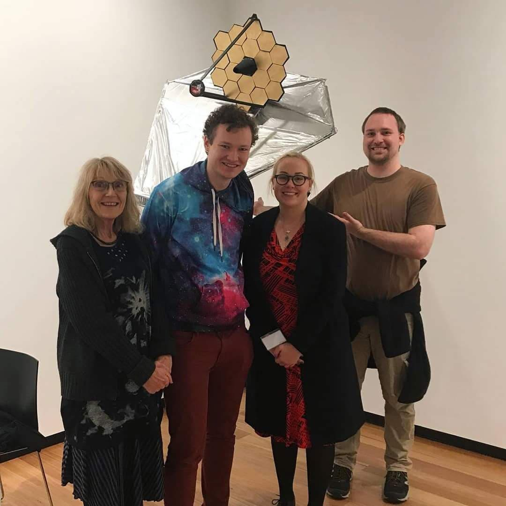
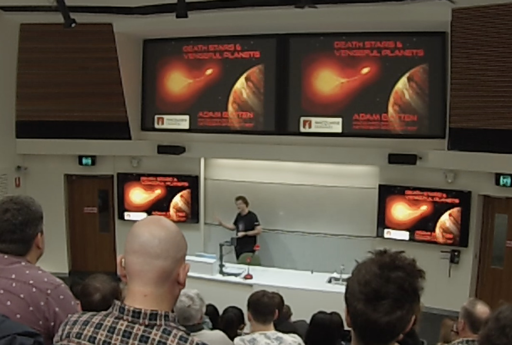
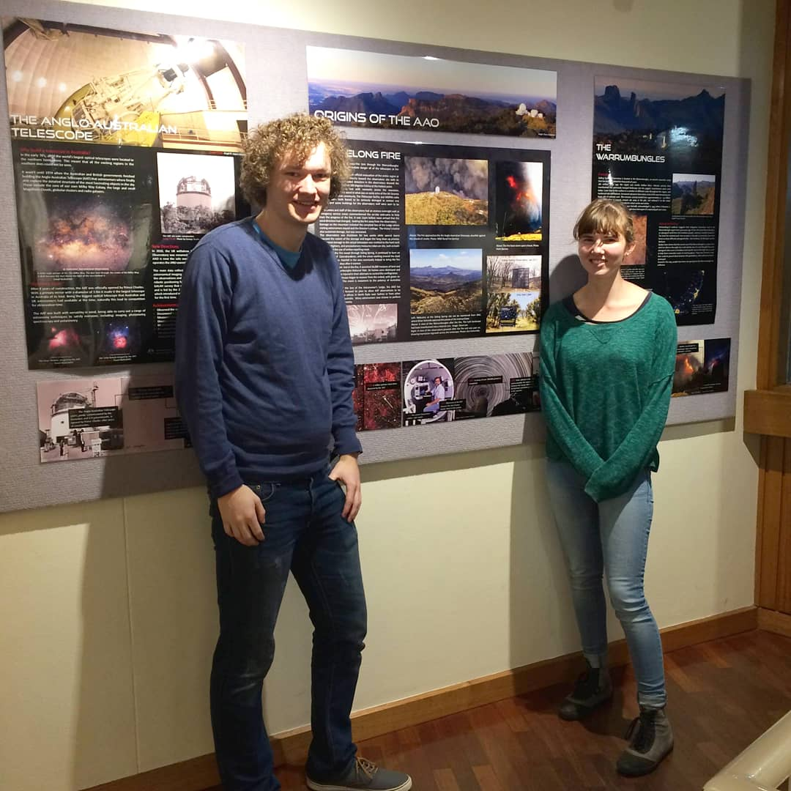

Outreach: Deeper Darker Brighter Art Exhibition
Outreach
Deeper Darker Brighter Art Exhibition (2018)
Exhibition Artist & Stargazing Guide
I was able work with the wonderful artists Carolyn Lewens and Pamela Bain to create a sculpture for their exhibition Deeper Darker Brighter at the Hawthorn Town Hall Gallery.
Carolyn and Pamela were inhouse artists for the Centre for Astronomy and Supercomputing at Swinburne. After being inspired by the Deeper Wider Faster program for detecting the fastest transients in the Universe, they created the Deeper Darker Brighter exhibition. Part of the exhibition included working with Swinburne PhD students to create paintings and sculptures of astrophysicical objects. Working with my fellow PhD student Sara Webb (pictured 2nd from the right) we created a model of the James Webb Space Telscope using recycled materials including cardboard, shoeboxes and various plastics. All of which were held together with a whole lot of hot glue and duct tape.
During the exhibition the Hawthorn Town Hall Gallery held a stargazing event for the public to come view the artworks and get a guided tour of the night sky from astronomers at Swinburne (including myself). The event also included demonstrations of the Science in VR app as well as a Q&A session.
The exhibition ran from 12th May - 1st July 2018
Macquarie University Astronomy Open Night Speaker (2017)
Public Talk: Death Stars and Vengeful Planets
Every year, the Macquarie University Association for Astronomy and the Department of Physics and Astronomy present the Macquarie University Astronomy Open Night. The open night was created to promote astronomy outreach and for various parts of the astronomical to interact and discuss astronomy and astrophysics. During the event more than 30 telescopes are set up to look at the night sky. To complement the observing, a number of astronomers give a talk about part of their research area.
I presented a 25 minute public talk related to my Masters thesis involving the common envelope phase of binary stars, and the role that planets might play in the evolution of binary systems.
Australian Astronomical Observatory (2015)
Designed AAT visitor centre and AAO outreach website
During my final semester of my undergraduate degree I completed a Professional And Community Engagement (PACE) unit. This unit is designed to allow students to engage with organisations related to their field and recieve first hand experience.
Fellow student Caro Derkenne and I completed our PACE unit with the Australian Astronomical Observatory under the supervision of Dr Amanda Bauer. Our project involved two parts:
The first part of the project involved updating the poster exhibition in the visitor's gallery inside the Anglo-Australian Telescope (AAT) complex. The posters were last updated in 1999, leaving visitors unaware of almost half the AAT's history and functionality. Caro and I created 14 updated posters coving the history, science and technology of the AAT.
The second part of our project involved updating and the fleshing out of the AAO public website. We performed a complete redesign of the public outreach section as well as translating the content of the AAT posters to an online medium. We also added sections on frequently asked questions and an astronomy glossary to explain some of the astronomy basics and more frequently used technical words such as 'spectroscopy'
For our work on this project Caro and I won the Judyth Sachs PACE prize.